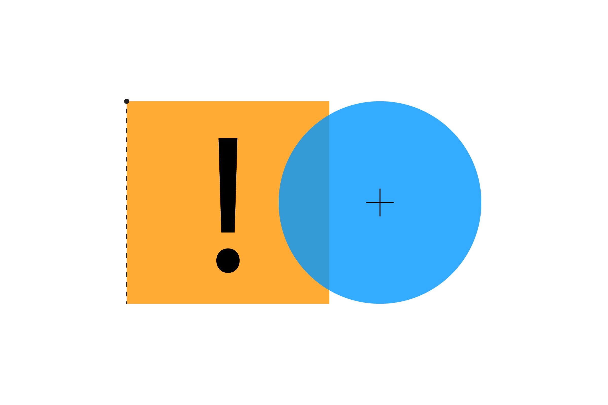

Завдання 4
Спробуйте ці завдання-підказки, щоб змінити код, який ми написали раніше:
-
Чи ви можете зробити так, щоб у багатокутника окремо підсвічувалося те ребро, яке знаходиться у стані колізії?
-
Спробуйе створити багатокутники, вершини яких з часом змінюють положення, щоб спостерігати, як вони
стикаються. Підказка: ви можете використовувати функцію
random(),
але для більш природного руху подивіться на приклад з
шумом Перліна.
У p5js для цього є спеціальна функція
noise()
Щоб дізнатися більше про випадковість і шум Перліна ви можете прочитати розділ
про випадковість
в онлайн-книзі Природа Коду.
-
Рандомізовані багатокутники можуть формувати чудові абстрактні монстрики! Чи можете ви створити просту
гру з багатокутними монстрами, які ганяються один за одним?
Далі: Трикутник і Точка